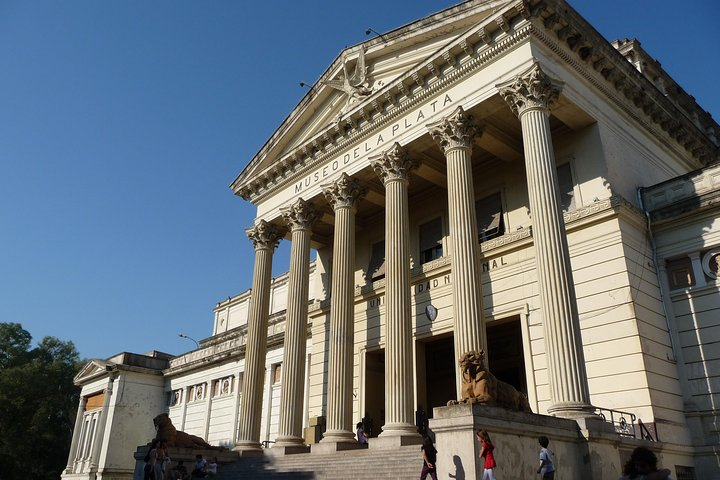
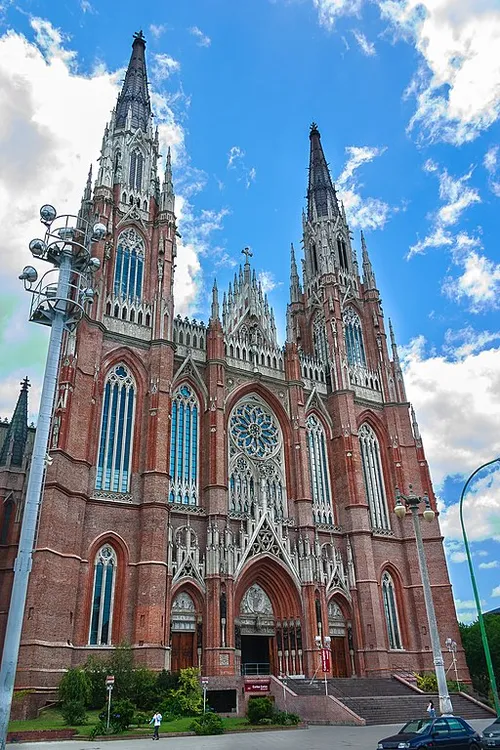
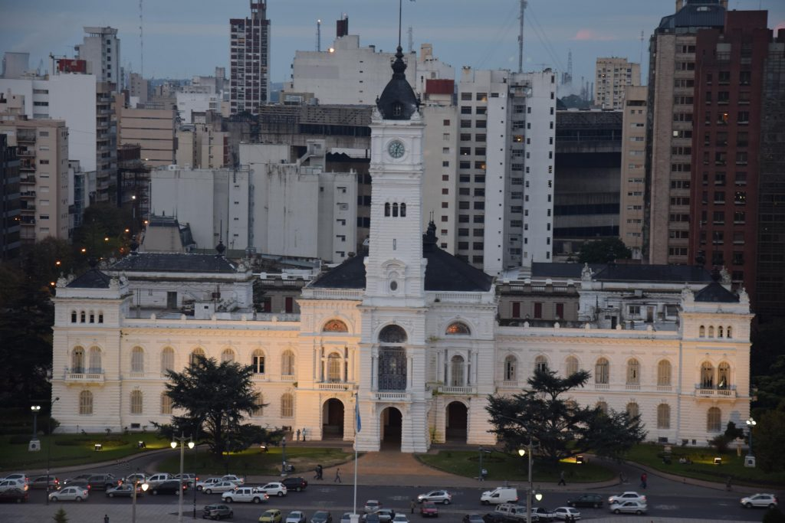
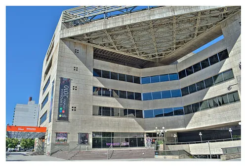
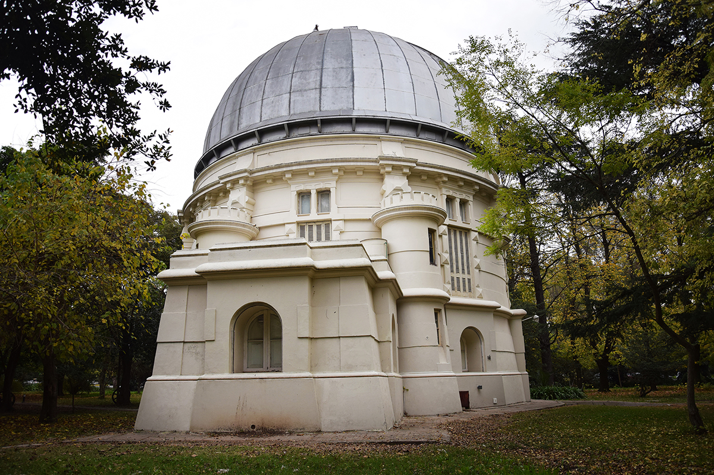
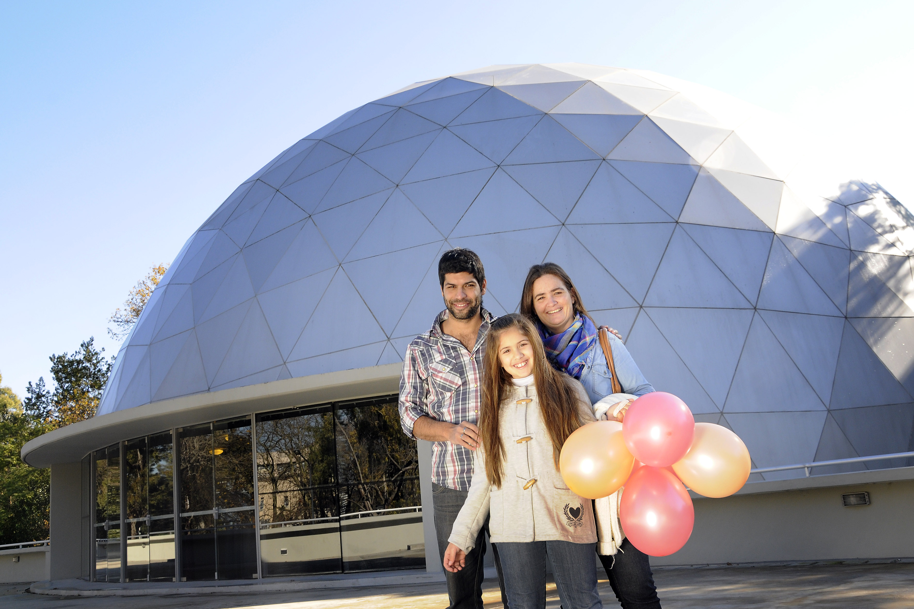

Lugares Interesantes!!

Museo de La Plata
Paseo del Bosque s/n-
Es una de las instituciones más emblemáticas de la ciudad capital de la provincia de Buenos Aires. Pertenece a la Facultad de Ciencias Naturales y Museo de la Universidad Nacional de La Plata.

Catedral de la PLata
Calle 14 n 975 e/51 y 53
La Catedral de la Inmaculada Concepción es el mayor Templo Neogótico de América del Sur, que se comenzó a edificar en 1884 y se inauguró en 1932, en coincidencia con el cincuentenario de la Ciudad, aunque no fue sino hasta 1999 en que se finalizaron las obras con la terminación de sus dos torres. Desde una de ellas, a la que se accede por ascensor, se puede observar el trazado perfecto de la ciudad.

Palacio Municipal
Calle 12 e/51 y 53-
Considerado como uno de los edificios más lujosos entre sus similares de América Latina, tanto la fachada como el interior responden a influencias del estilo renacentista alemán.

Teatro Argentino
Av.51 N 702 e/8 y 9
El Teatro posee tres salas de vanguardia. La Sala “Alberto Ginastera”, con capacidad para 2.200 espectadores, tiene excelentes condiciones acústicas y de visibilidad y cuenta, además, con maquinaria escénica de avanzada y un sistema de plataformas móviles que permite cambios escenográficos en un tiempo ínfimo.

Observatorio Astronomico
Paseo del Bosque s/n-
Posee varias cúpulas giratorias desde donde se observan los fenómenos celestes, a través de diferentes telescopios. El Telescopio Gran Ecuatorial Gautier con que cuenta el Observatorio platense fue el último gran instrumento adquirido por el Centro de Observación, y tiene cualidades tan particulares que durante muchos años los convirtieron en el telescopio más grande del Hemisferio Sur.

Planetario
Av.Iraola y Calle 118-Paseo del Bosque
El Planetario de la Universidad Nacional de La Plata está ubicado en el Paseo del Bosque, dentro del predio de la Facultad de Ciencias Astronómicas y Geofísicas. Su construcción se inició en el 2010, y se inauguró en el 2013. Con una superficie aproximada de 1200 metros cuadrados y capacidad para 175 visitantes, es considerado como el más moderno de Sudamérica.